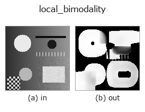

texture op• Data kinds: image → image
• Call: fullseye.apply(img, "local_bimodality", a=0.5, b=0.5) (the 2-D model is one image plus two scalar knobs a,b∈[0,1])

*The figure is the actual output on a synthetic 128×128 input. Left: input, right: output. Point clouds are drawn as a top-down scatter (brightness = z), 1-D series as a line plot, volumes as the maximum-intensity projection along z, videos as the middle frame, complex images as magnitude; return values that are not pictures are shown as the values themselves.*
Sweeping knob a (0.1 / 0.5 / 0.9, the other knob at its default):
▸ local_bimodality: knob a sweep (docs site)
Sweeping knob b (0.1 / 0.5 / 0.9, the other knob at its default):
▸ local_bimodality: knob b sweep (docs site)
On other images (synthetic scene / photo / coins. Top row: inputs, bottom row: their outputs. Knobs at default):
▸ local_bimodality: other inputs (docs site)
*The 4th column is a colour (H,W,3) input. This op handles colour without crossing channels (it does not convolve the colour channel as a third spatial axis).*
Local bimodality (bimodality coefficient). Without choosing even 1 threshold, returns only "does this place split into 2 values?" as a 0-to-1 map.
a sweeps the window side length over 9, 15, 25, 41 (larger gives a more stable estimate, but thin structures dissolve into their surroundings). b sweeps the contrast floor to max(1e-5, 0.25b x image value range) — if the window's standard deviation is below this, 0 is returned (even at b=0 the absolute floor of 1e-5 remains).
BC = (skewness^2 + 1) / kurtosis comes out in closed form from the window's 1st to 4th moments alone (4 box means). It is invariant to both translation and scale, so faint and strong patterns alike give the same value. The reference values are fixed by analytic solutions, and the measurements converge to them (window 41):
• 2-point distribution (2 values, half and half) = 1.0 (kurtosis 1 is the lower bound) — measured 1.0000 right on top of a step
• Uniform distribution = 5/9 = 0.5556 — measured 0.5598 on uniform random numbers
• Normal distribution = 1/3 = 0.3333 — measured 0.3306 on normal random numbers
> 5/9 is the classical rule of thumb for "2 peaks sharper than uniform". ★It does not become 0 even for a single peak — the floor for a normal distribution is 1/3, not 0, so the usable band is 0.33-1.0.
Source, and the limitations it inherits (Pfister, Schwarz, Janczyk, Dale & Freeman 2013, *Frontiers in Psychology* 4:700). ★Skewed unimodal distributions produce false positives: in the paper's figure a clearly unimodal distribution has BC = 0.73 and a truly bimodal distribution has BC = 0.67, so the ranking is reversed. The larger the absolute skewness, the higher BC rises, regardless of the number of peaks. This op has the same property — windows with a one-sided tail (a few bright dots on a dark ground, etc.) come out high. Do not decide bimodality with this 1 measure alone; combine it with the separability of local_std or otsu. Note that the paper's formula includes a sample correction, (m3^2+1)/(m4 + 3(n-1)^2/((n-2)(n-3))), while this op uses the population version (a window has 81 to 1,681 samples, so the correction is negligible; the reference values above, 1/3, 5/9 and 1.0, hold exactly for the population version).
Relation to the generalisation on the threshold-selecting side: Barron (2020), Generalized Histogram Thresholding (arXiv:2007.07350), includes Otsu, Minimum Error Thresholding and weighted percentile thresholds as special cases and continuously interpolates which threshold to choose. This op is the counterpart:
it measures whether a threshold exists at all.
Why it is needed before the threshold-selecting ops (otsu / threshold): binarisation returns an answer for any image, but in a window with only 1 peak it cuts at a meaningless position (a limitation that the otsu docstring itself admits). This op returns "does it split at all" before cutting, so you can decide "do not cut where it does not split". Used to judge whether a character cell is 1 colour of glyph on a ground of 1 colour, whether a board is evenly lit, or whether a scratch really has a different grey level from the ground.
★The floor is mandatory. On a uniform surface the variance becomes rounding dust, and the 3rd- and 4th-order ratios of dust turn into structure — a version that set the floor only as a quantity relative to the image value range gave, on an image that was nothing but a uniform 0.5 with dust of amplitude 1e-12 to 1e-8 added, a BC maximum of 1.0000 (the value range itself is dust, so the relative floor does not work). Only with the absolute floor of 1e-5 added does it drop to 0 (measured).
It does not normalise (the value is BC itself), so values can be compared between images. The border is reflected (mode="reflect"). An empty frame gives all 0. ★Because the window is wide, it must not be split into tiles (registered with the reason in scale.py).
• gallery2d_texture_freq family guide
• Sample-data catalog (download URLs / licences) — 2-D uses skimage.data (BSD/public domain) plus synthetic images; 3-D lists download URLs for real data sources (Stanford, PDS, …).
• Operator provenance and references — the sources of the research/methods this op family came from.
• The canonical algorithm (author, year) and its uses are named in the family usage guide above.
The program below has been verified to run (same input as the figure). In Studio's help this block becomes buttons that load and run it on the spot.
local_bimodality 0.50 0.50
▸ Load this pipeline · Load & run
• gallery2d_texture_freq — py -3.11 examples/gallery2d_texture_freq.py
image as input)identity · gaussian · mean_box · bilateral · unsharp · median · min_filter · max_filter
texture)std_filter · local_std · scale_select_std · bootstrap_std_error · structure_tensor_orientation · structure_tensor_coherence · gabor · sk_frangi
*Provenance: ops.py — 2D operator registry. This per-op note is generated by tools/opdocs.py md (do not hand-edit).*
© 2026 Kazufumi Furuse — Fullseye operator documentation. Licensed under Apache-2.0.